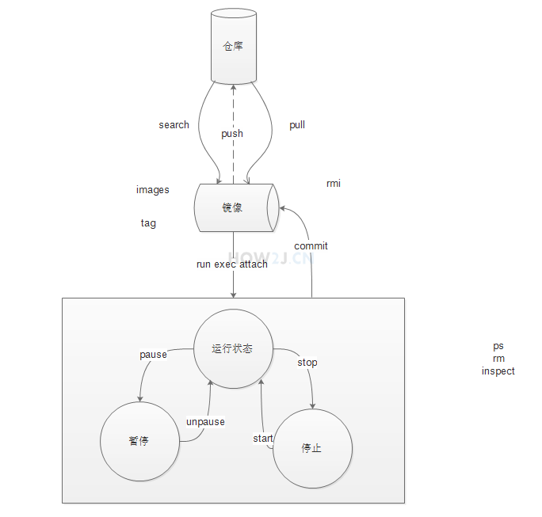

1、安装Docker
yum install docker -y

2、部分docker命令
基本操作：停止、启动、重启、查看状态、查看版本
1
2
3
4
5systemctl stop docker
systemctl start docker
systemctl restart docker
systemctl status docker
docker -v镜像管理常见的有这么些：
1
2
3
4
5
6
7
8
9
10
11
12
13
14
15
16
171.search 查看仓库里有些什么镜像
例如：docker search nginx
2.pull 拉取镜像
例如：docker pull tomcat:8.0 #8.0指定版本
3.images 查看本地有些什么镜像
例如：docker images
4.rmi 删除本地镜像
例如：docker rmi tomcat:8.0
删除全部镜像：docker rmi $(docker images -q) >
5.tag可以对镜像进行标记
docker tag docker.io/tomcat:8.0 docker.io/mytomcat:8.0
通过tag可以对镜像进行标记，如图所示，把 docker.io/tomcat:8.0 标记成了docker.io/mytomcat:8.0
6.push推送镜像
推送必须要先注册账户 [https://hub.docker.com/signup]( https://hub.docker.com/signup)
docker login #登陆
docker push how2j/tmall:latest #账户名/镜像名：版本容器管理
2
3
4
5
6
7
8
9
10
11
12
13
14
15
16
17
18
19
20
21
22
23
24
25
26
27
28
29
30
31
32
查看所有的容器: docker ps -a
1.运行 run
例如：docker run -dit --privileged -p21:21 -p80:80 -p8080:8080 -v /home/docker-nginx/nginx.conf:/etc/nginx/nginx.conf --name how2jtmall how2j/tmall:latest /usr/sbin/init
这个命令分解：
docker run 表示运行一个镜像
-dit 是 -d -i -t 的缩写。 -d 在后台运行。 -i 表示提供交互接口可以通过 docker 和 跑起来的操作系统交互。 -t 表示提供一个 tty (伪终端)，与 -i 配合就可以通过 ssh 工具连接到 这个容器里面去了
--privileged 启动容器的时候，把权限带进去。 这样才可以在容器里进行完整的操作
-p21:21 第一个21，CentOS 上开放21端口。 第二个21 容器里开放21端口。 当访问CentOS 的21端口的时候，就会间接地访问到容器里了
-p80:80 和 21一个道理
-p8080:8080 和21 一个道理
-v 挂载文件用的，表示将你本地的nginx.conf覆盖你要起启动的容器的nginx.conf文件
--name how2jtmall 给容器取了个名字，叫做 how2jtmall，方便后续管理
how2j/tmall:latest how2j/tmall就是镜像的名称， latest是版本号，即最新版本
/usr/sbin/init: 表示启动后运行的程序，即通过这个命令做初始化
2.进入容器 exec
例如： docker exec -it tomcat:8.0 /bin/bash
3.生命周期管理， 暂停，恢复，停止，启动 pause, unpause, stop, start
例如：
docker pause nginx；
docker unpause nginx；
docker stop nginx；
docker start nginx；
5.检查某个具体的容器
例如：docker inspect nginx
6.rm 删除容器
例如：docker rm nginx
删除全部容器：docker rm $(docker ps -qa)
7.commit，对容器做了修改后，把改动后的容器，再次转换为镜像
例如：docker commit nginx（配置修改好后容器名称） nginx:now
- 网络恢复
2
3
4
5
6
7
8
9
10
11
vi /etc/sysctl.conf
或者
vi /usr/lib/sysctl.d/00-system.conf
添加如下代码：
net.ipv4.ip_forward=1
重启network服务
systemctl restart network
查看是否修改成功
sysctl net.ipv4.ip_forward
如果返回为“net.ipv4.ip_forward = 1”则表示成功了
导入导出命令介绍
涉及的命令有export、import、save、load
1
2
3
4
5
6
7
8
9
10
11
12
13
14
15
16
17
18
19
20
21
22
23
24
25
26save示例 ,把镜像导出本地文件
docker save -o nginx.tar nginx:latest
或
docker save > nginx.tar nginx:latest
其中-o和>表示输出到文件，nginx.tar为目标文件，nginx:latest是源镜像名（name:tag）
load 示例 ，把本地镜像文件导入docker
docker load -i nginx.tar
或
docker load < nginx.tar
其中-i和<表示从文件输入。会成功导入镜像及相关元数据，包括tag信息
export示例 ，把docker容器导出本地文件
docker export -o nginx-test.tar nginx-test
其中-o表示输出到文件，nginx-test.tar为目标文件，nginx-test是源容器名（name）
import示例 ,把本地容器文件导入docker
docker import nginx-test.tar nginx:imp
或
cat nginx-test.tar | docker import - nginx:imp